-
When I was still a PhD student at University of California at Santa Barbara, I did pretty much the same as the majority of doctoral students and strived to publish papers in top statistics journals. And from that point of view, my performance during the PhD study could be rated as satisfactory or above.
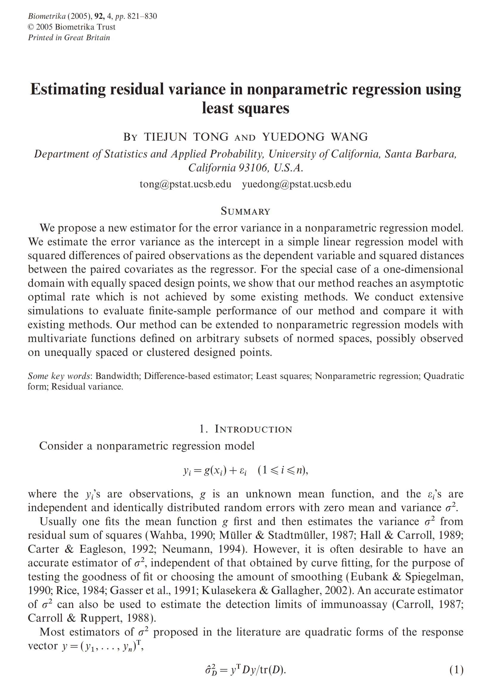 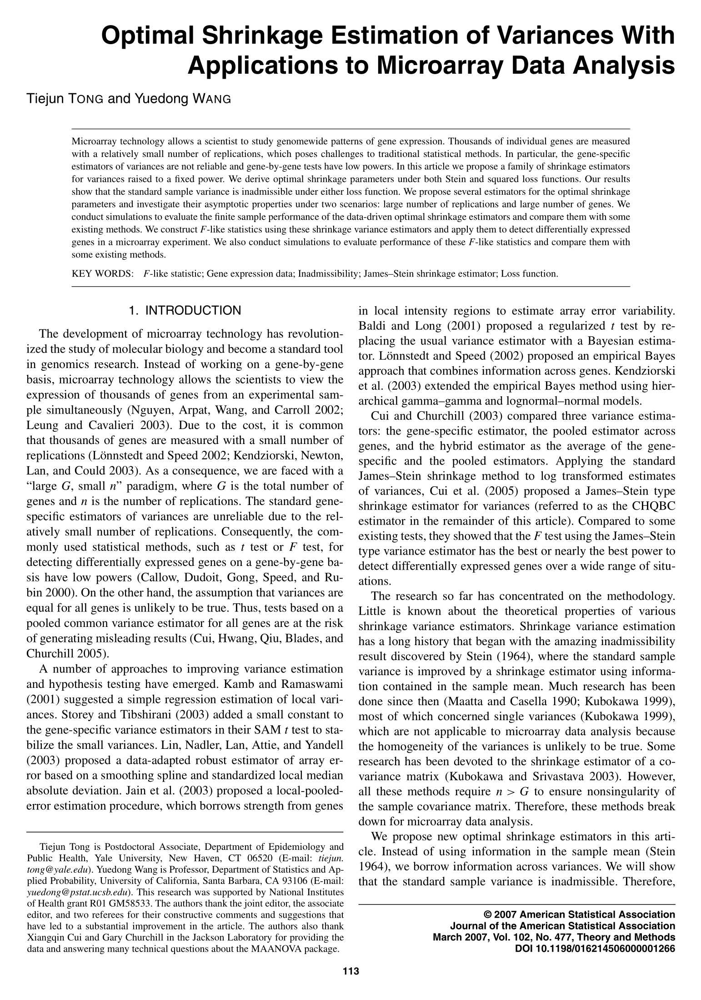 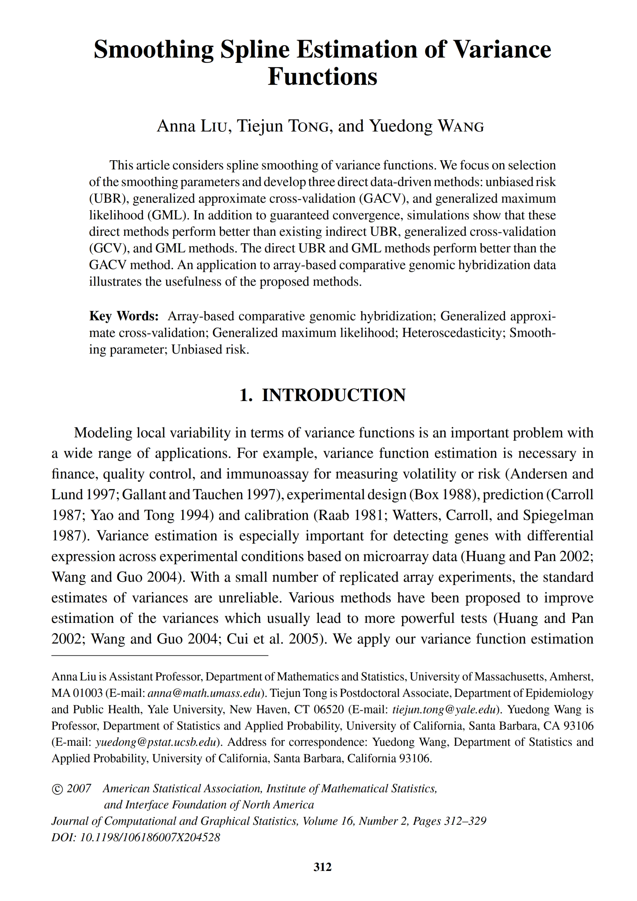 -
Shortly after the beginning of my research career, I started to receive a typical type of rejection letters from top statistics journals, with the main reason that my papers were written too simply and thus too easy to be understood, no matter whether the underlying ideas are enough innovative or significant. When the door to top statistics journals gradually closed to me, I suddenly realized that my “being able to write a simple paper” talent may, in fact, have opened another door for me.
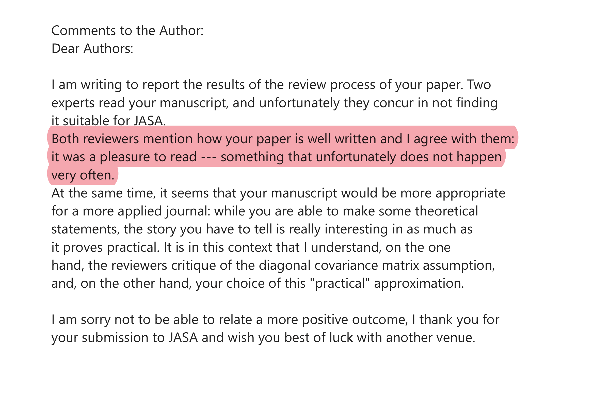 -
When statisticians get a headache and visit medical doctors, they are often treated with effective medicine so that the headache can be either cured or, at least, temporarily relieved. On the other hand, however, when medical doctors need statistical methods, they usually get a big headache (instead of pleasure) reading papers written by statisticians, partially because many statistical papers were written in a “pretending to be deep” style even though the statistical ideas behind it may actually be quite simple.
-
If statisticians don't want to be mistakenly classified as “bad guys”, then it is time to call for a change of the current statistical culture. It is our responsibility, as statisticians, to be able to present the statistical methods in a simple, elegant and practical way so that practitioners can easily understand and use, and with the possibility that they will call from the deep of their hearts that our statistical methods make their life easy or a lot easier.
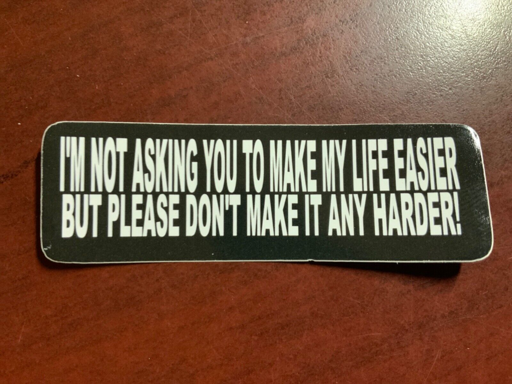 

-
Toward that end, I am proud so far of my simple research in developing new and novel statistical methods for meta-analysis, mainly encouraged by dozens of thank-you letters, public forum posts, and review articles from researchers and medical doctors all over the world. Should you also enjoy reading our papers, please do not hesitate to share with us your thoughts. Your encouragement will, undoubtedly, turn to new and great energy for us, in particular for my PhD students, to continue on the journey to simple research.
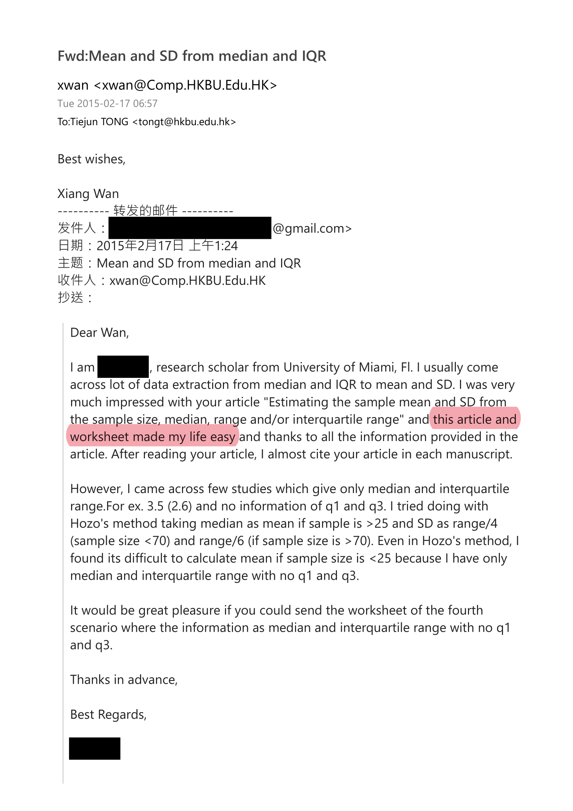 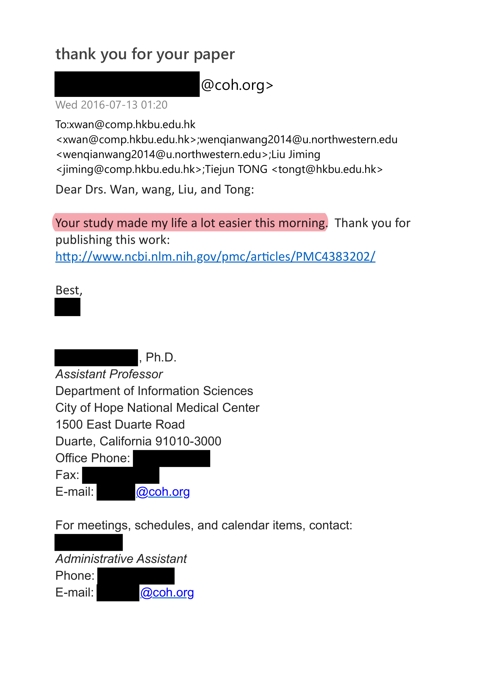 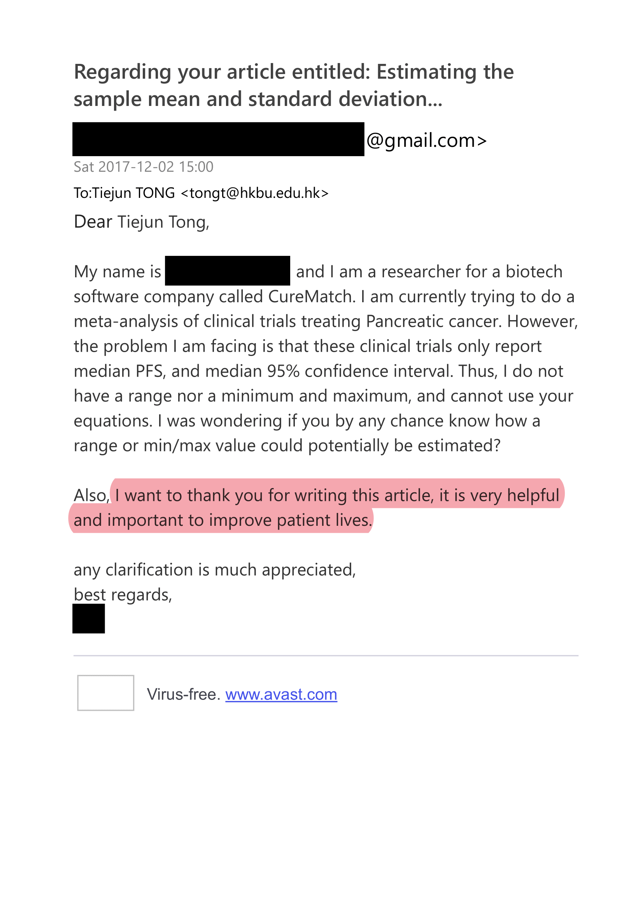
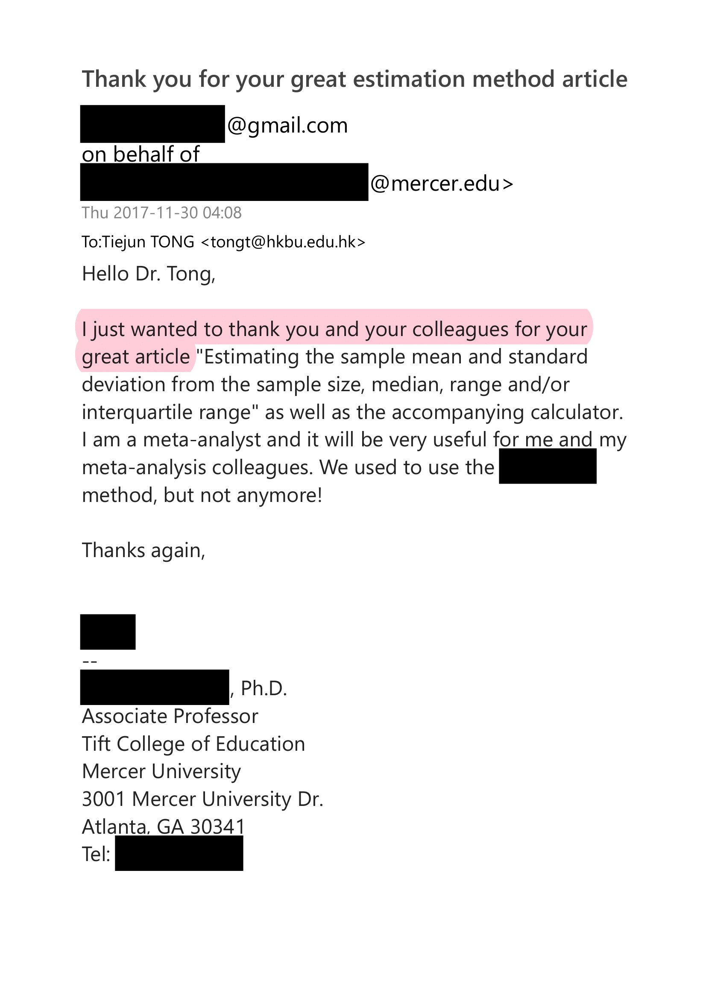 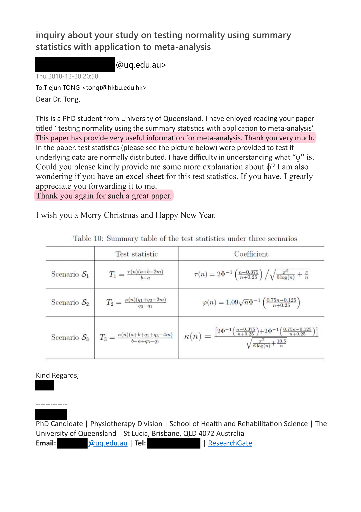 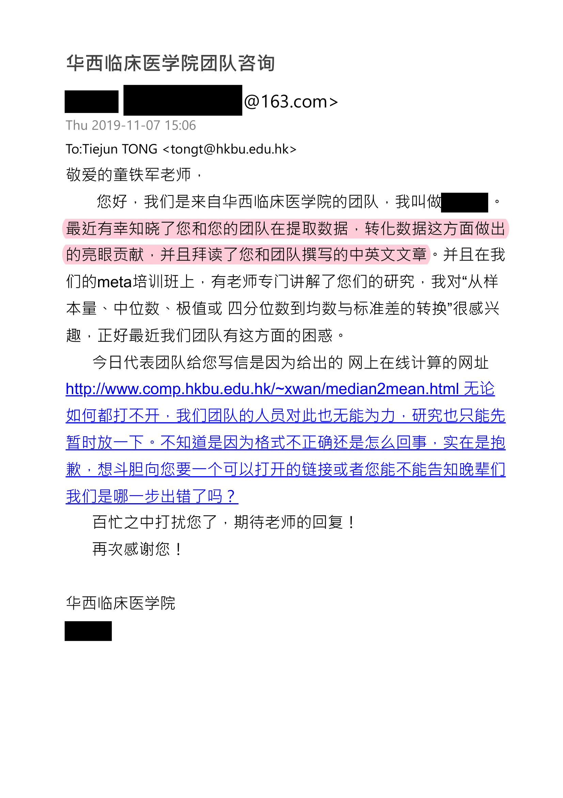
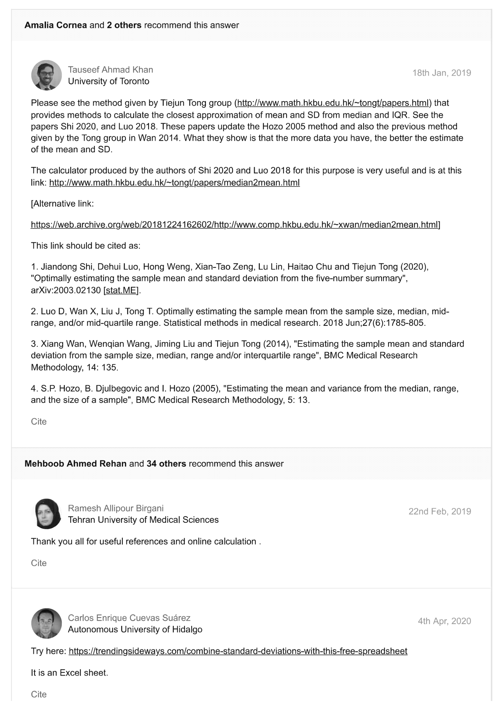 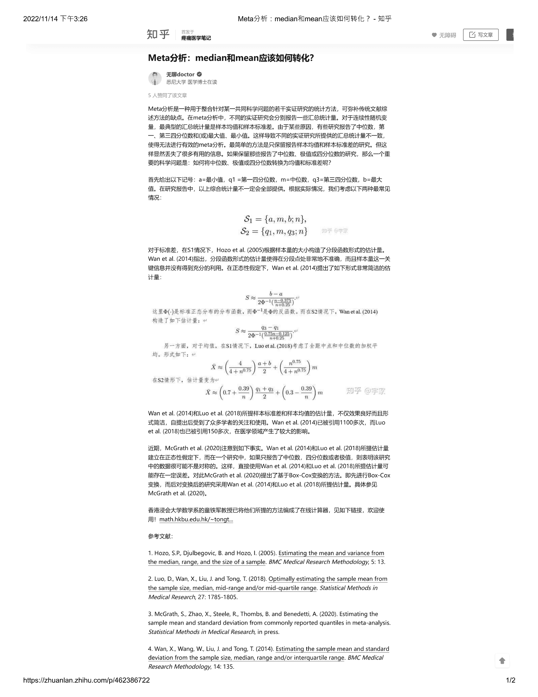 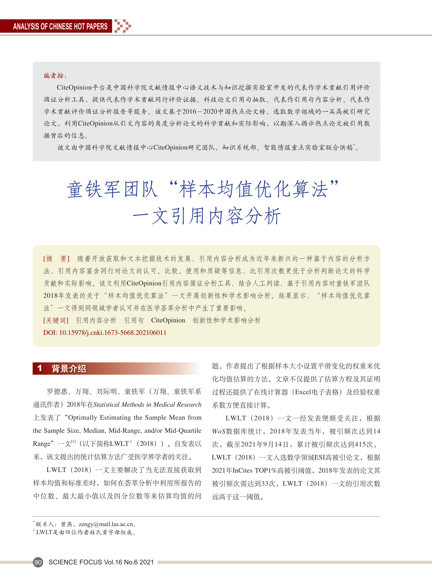
*注释： 某边缘学科老朽，因缺乏学术论文“深入”写作之道，穷尽驷马之力亦难发表专业顶刊。以酒消愁，于偶然间得悉（请参考图中JASA主编之点评）尚存“浅出”这一黔驴之技，幡然醒悟，以此慰余生，不亦乐乎？
*解读： 统计学作为一门高度交叉的应用学科，不仅需要深层次的理论研究以推动学科自身的发展，更需要有“简单、优雅、实用”的统计方法，使统计学的影响力真正渗透至其他学科并成为推动社会进步的正能量。
*杂谈： 一个具有广阔应用前景的统计方法，可以有两种不同的方式去实现其社会经济价值：一种是追求实际应用价值的最大化，另一种则是追逐个人收益的最大化。如果选择后者，往往需要对本来挺简单明了的统计方法修饰上一些经典的或非经典的理论结果，总之越复杂越好，然后再用老练的写作手法提升文章B格让人不明觉厉，并最终以冲击统计学顶刊为其首要奋斗目标。两者若能兼顾那是最好的，但倘若鱼和熊掌不可兼得，我一般选择 -- 等等，身为黔驴 -- 我好像并没有选择权。